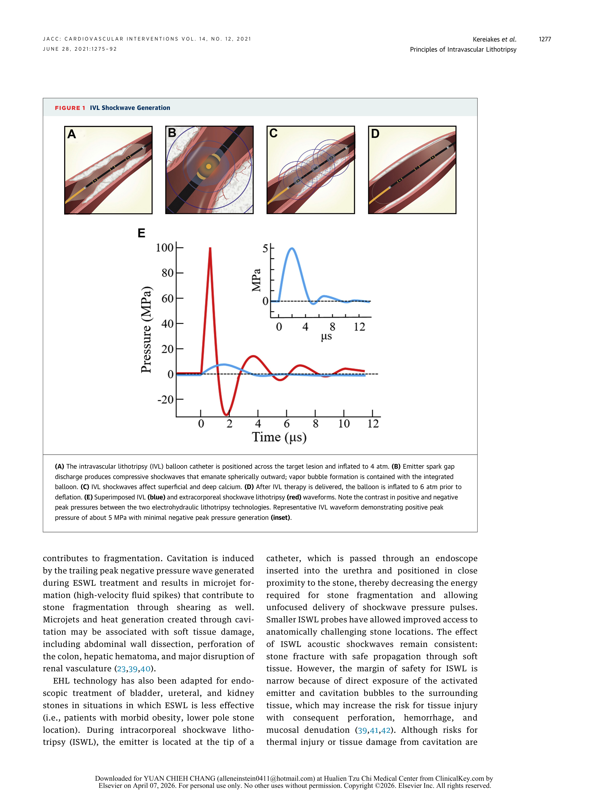
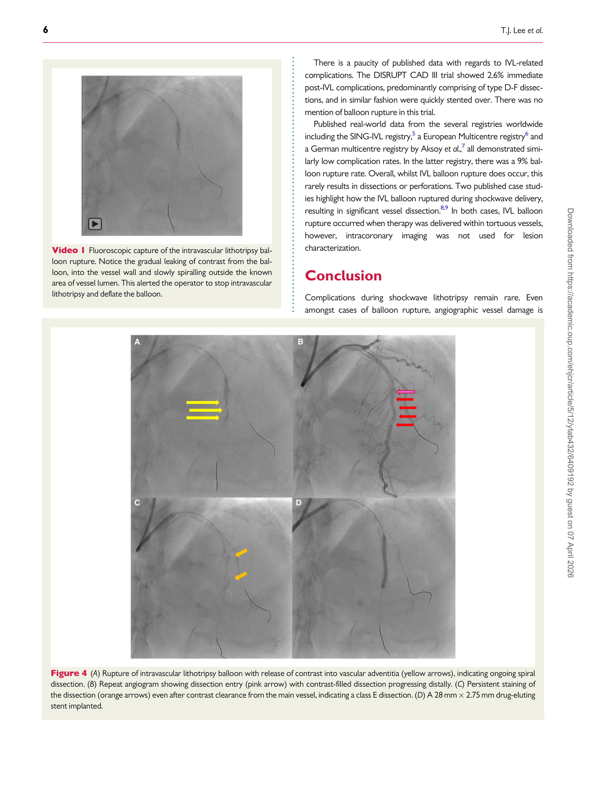
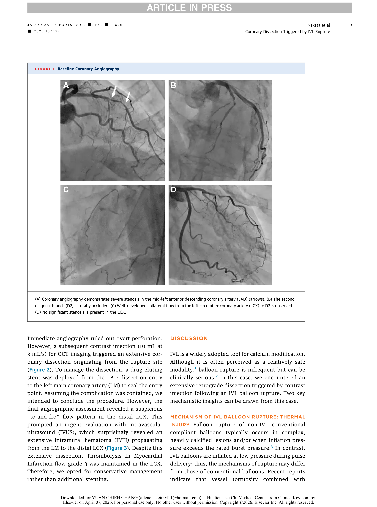
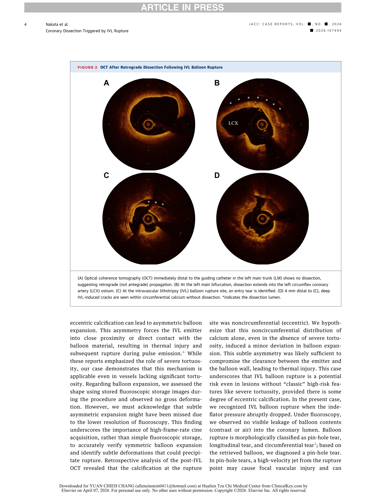
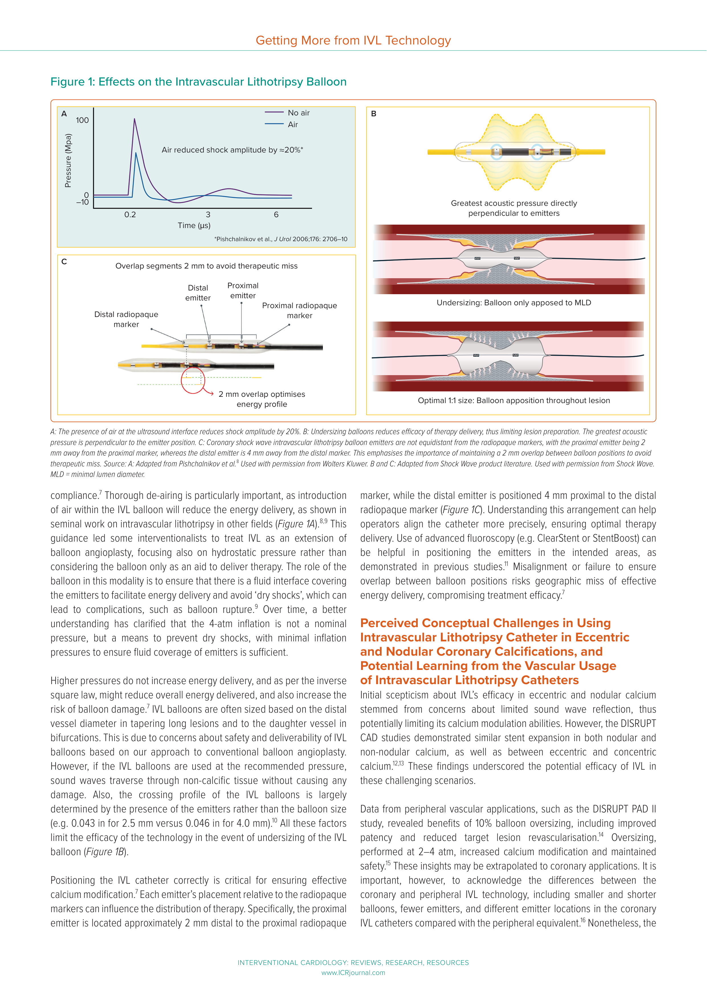

一、IVL 技術簡介與 Balloon 併發症概觀
Intravascular lithotripsy (IVL) 是基於 electrohydraulic lithotripsy (EHL) 原理的 血管內鈣化斑塊改質技術。導管上的 spark gap 放電產生 acoustic pressure wave 與 plasma vapor bubble，利用 compressive stress 選擇性碎裂血管壁中的鈣化組織[6] 📘。其關鍵物理參數包括：peak positive pressure 約 5 MPa（~50 atm）、peak negative pressure 僅約 0.3 MPa（~3 atm）、energy flux density 約 0.0086 mJ/mm2；每個 pulse 能量為 8–10 mJ，持續 0.6–1.2 ms，以 1 Hz 速率發射[6] 📘。由於 IVL 的 positive pressure 遠低於 extracorporeal shockwave lithotripsy (ESWL)（30–110 MPa），且 negative pressure 極低、能量密度低數個數量級，聲波通過聲阻抗相近的軟組織時幾乎不造成損傷， 僅在遇到聲阻抗差異極大的鈣化組織時產生碎裂效應[6] 📘。

冠狀動脈 IVL 系統（Shockwave C2）採用 semi-compliant balloon，內填 50:50 saline/contrast mixture 提供 spark generation 所需離子環境，治療時僅充至 subnominal pressure 4 atm 以確保 balloon-vessel wall apposition[6] 📘。C2 導管規格為直徑 2.5–4.0 mm、 balloon 長 12 mm、配備 2 個以 180° diametrically opposing 排列的 emitters、 每根導管最多可傳遞 80 pulses，經 0.014-inch guidewire 引入，需 6F guide catheter[6] 📘。Balloon 不僅作為 emitter 的載體，更提供三大保護功能：(1) saline/contrast mixture 散除 vapor bubble 產生的熱量並屏蔽 emitters 避免直接接觸血管壁；(2) pulse delivery cycles 間定期洩氣（periodic deflation）散熱、移除殘餘 gas bubbles 並允許組織 再灌流；(3) 提供機械穩定並維持 acoustically transparent 的聲波傳導界面[6] 📘。
隨著 IVL 技術在全球範圍的快速推廣，Disrupt CAD 系列試驗以嚴謹的 prospective 設計驗證了其安全性與有效性。然而，臨床實務中的 balloon-related complications — 包括 balloon rupture、perforation 與 dissection — 已透過個案報告 與真實世界 registries 逐漸浮現。Lee 等人透過 optical coherence tomography (OCT) 詳細分析了一例 IVL balloon rupture 導致 Type E spiral coronary dissection 的案例， 指出 IVL 並非萬無一失的工具（not a fail-safe tool），特定解剖特徵如 nodular calcium、vessel tortuosity 及 balloon-wall gaps 可能使 balloon 結構完整性受損 而導致破裂[8] 🔵。該文 引述 Aksoy 等人的 German multicentre registry 報告了高達 9% 的 balloon rupture rate，但多數屬良性事件，鮮少導致 dissection 或 perforation[8] 🔵。這些觀察凸顯了系統性檢視 IVL balloon complications 發生率、機轉與風險因素的臨床需要。
二、IVL Balloon Complication 發生率
IVL balloon-related complications 的發生率在不同研究設計間呈現明顯差異。 表 1 彙整了目前主要臨床試驗與真實世界 registries 報告的 complications 數據。值得注意的是，各研究在併發症定義、報告方式及收案族群方面 存在顯著差異，直接比較時需謹慎解讀。
| Study | N | Design | Balloon Rupture | Perforation | Flow-Limiting Dissection (≥D) | Overall Complication |
|---|---|---|---|---|---|---|
| Disrupt CAD I–IV Pooled[1] 🟠 | 628 | Prospective pooled analysis | Not reported | 0% | 1.8% | 2.1% |
| Disrupt CAD III 1-yr[16] 🟠 | 384 | Prospective single-arm | Not reported | — | — | 1-yr MACE 13.8% |
| Disrupt CAD III PAS (CathPCI)[21] 🟠 | 2,077 (auxiliary forms) | Post-approval surveillance | 1.2% (24/2,077) | — | Serious dissection after LoP: 0.0% (1/2,077) | PAS Cohort: 1.3% (2/153) balloon LoP |
| BENELUX-IVL (van Oort 2025)[2] 🟡 | 509 | Multicenter registry | 1 (0.2%)* | 7 (1%) | 9 (2%) | 33 (6%) |
| BENELUX-IVL (van Oort, Heart 2025)[3] 🟡 | 454 | Multicenter registry | 5 (1%)† | 7 (2%) | 10 (2%) | 29 (6%) |
| Mastrangelo et al.[5] 🟡 | 110 lesions | Single-center registry | 5 (4.5%) | 1 (0.9%) | 3 (2.7%) | 9 (8.2%) lesion-level |
| Cubero-Gallego et al.[15] 🟡 | 109 | Prospective multicenter | Not reported | — | — | 30-d MACE-free 98% |
| Chugh et al. (FDA MAUDE)[4] 🟡 | 23 reports | Passive surveillance | 3/20 (15%)‡ | — | — | Device malfunction 56.5% |
|
*Ref 2 僅報告 1 例因 balloon rupture 導致 perforation 的案例，未獨立報告 balloon rupture rate。 †Ref 3 報告 5 (1%) 例 balloon rupture/malfunction 需更換第二顆 IVL balloon，其中 1 例 balloon rupture 後發生 perforation。 ‡FDA MAUDE 為 passive reporting 系統，無分母數據，無法計算真正發生率；數據涵蓋 peripheral IVL (n=20) + off-label coronary (n=3)。 |
||||||
Disrupt CAD 系列的數據缺口
Disrupt CAD I–IV patient-level pooled analysis（N=628）報告 post-IVL serious angiographic complications 為 2.1%，其中 flow-limiting dissection (grade ≥D) 1.8%、slow flow 0.4%，而 perforation、abrupt closure 與 no-reflow 均為 0%[1] 🟠。這是目前 IVL 安全性最重要的 benchmark 數據。然而，一項關鍵的數據缺口是：Disrupt CAD 系列完全未報告 balloon rupture 或 device malfunction 的發生率，此 endpoint 在 pooled analysis[1] 🟠 與 1 年追蹤報告[16] 🟠 中均付之闕如。Disrupt CAD III 的 1 年追蹤（N=384）呈現 MACE 13.8%、ID-TLR 4.3%，30 天後僅新增 1 例 late stent thrombosis (0.3%)，顯示 IVL 的長期安全 性穩健[16] 🟠；但 balloon integrity 相關事件是否被系統性低估，仍是未解之問。Disrupt CAD III 的 post-approval surveillance（PAS）數據首次填補了此缺口：在 2,077 例 CathPCI Registry auxiliary forms 中，balloon loss of pressure/rupture 發生率為 1.2%（24/2,077），PAS cohort 為 1.3%（2/153）；嚴重 dissection after balloon loss of pressure 僅 0.0%（1/2,077）[21]。
真實世界 Registries 揭示較高的併發症率
與 Disrupt CAD 系列排除 acute coronary syndrome (ACS)、chronic total occlusion (CTO)、left main disease、in-stent restenosis (ISR) 等高風險族群不同， 真實世界 all-comers registries 納入了更複雜的臨床場景。BENELUX-IVL registry （N=509，8 centers）報告整體併發症率 6%（33/509），包括 flow-limiting dissection 9 例 (2%)、coronary perforation 7 例 (1%)、abrupt vessel closure 5 例 (1%)、hemodynamic instability 9 例 (2%) 及 reanimation 5 例 (1%)[2] 🟡。 Mastrangelo 等人的單中心 real-world registry（110 lesions）則報告了更高的 IVL balloon burst rate 達 4.5%（5/110），其中 1 例 burst 進一步導致 Ellis Type III vessel perforation (0.9%)，需以 covered stent 處置；flow-limiting dissection 為 2.7%（3/110）[5] 🟡。FDA MAUDE database 的被動回報分析 (2016–2020) 則顯示 23 例不良事件報告中，device malfunction 佔 56.5%， balloon rupture 佔 peripheral 使用的 15%，catheter dislodgment 佔 60%[4] 🟡。但 MAUDE 為 passive surveillance 系統，無分母數據，無法計算真實發生率，且 2016–2020 年間 coronary IVL 尚未獲 FDA 核准，coronary 使用均為 off-label[4] 🟡。
IVL-Related vs Concomitant Therapy Complications 的區分
BENELUX-IVL registry 的一項重要貢獻在於明確區分「IVL 直接相關」與「整體治療 （含 concomitant therapy）相關」的併發症。整體併發症率為 6%（33/509），但經 centralized core lab 逐一回溯冠脈造影確認後，IVL 治療後立即發生的併發症 僅 1%（6/509）[2] 🟡 [3] 🟡。這 6 例 IVL-related complications 包括：controlled coronary dissection 2 例 (0.4%)、hemodynamic instability 2 例 (0.4%)、IVL balloon rupture 致 perforation 1 例 (0.2%)、 abrupt vessel closure 1 例 (0.2%)，且所有案例均成功處理[2] 🟡。其餘大多數 complications 與 high-pressure postdilatation 等 concomitant therapy 相關[3] 🟡。同一 registry 較早的分析（N=454， Ref 3）亦報告 5 例 (1%) balloon rupture/malfunction 需更換第二顆 IVL balloon[3] 🟡。 BENELUX-IVL 的多變量分析進一步發現 balloon-to-artery ratio (BAR) 為唯一 顯著的併發症獨立預測因子（OR 1.453, 95% CI 1.074–1.966, p=0.015）[2] 🟡， 提示 balloon sizing 在併發症預防中的關鍵角色。值得注意的是，IVL pulse count 與 max inflation pressure 均與 complications 無顯著相關[2] 🟡。
三、Balloon Rupture 機轉
3.1 正常 IVL 震波物理學
冠狀動脈 intravascular lithotripsy（IVL）的核心機制為 electrohydraulic lithotripsy（EHL）：導管內微型 emitter 於流體介質中放電， 產生 spark → vapour bubble → acoustic pressure wave， 此聲波傳入鈣化斑塊後即可造成 calcium fracture[6] 🟢 Expert Review。 每次脈衝所產生的 circumferential pressure 約 50 atm，脈衝持續時間 0.6-1.2 ms， 發射頻率 1 Hz[6]。 然而單次脈衝所攜帶的能量極低——每 pulse 僅 8-10 mJ， 能量通量密度（energy flux density）為 0.0086 mJ/mm2[6]。
IVL 之所以能選擇性碎鈣而不損傷正常軟組織，關鍵在於聲阻抗（acoustic impedance）差異： 水的聲阻抗為 1.5 × 106 kg/m2s， 肌肉組織為 1.7 × 106 kg/m2s， 而鈣化組織則高達 7.8 × 106 kg/m2s[6] 🟢 Expert Review。 聲波在阻抗相近的軟組織中幾乎不被反射，但在高阻抗的鈣化界面上產生強烈反射與應力集中， 從而造成裂縫。此外，semi-compliant balloon 在治療過程中扮演「containment」角色—— 將 vapour bubble 限制在 balloon 腔內，並透過每序列後的 periodic deflation 進行散熱[6]。
3.2 Benign Balloon Rupture — Material Fatigue
每支 IVL catheter 的最大允許使用量為 80 pulses，以每秒 1 pulse 的頻率發射， 每 10 pulses 為一個序列（set）[7] 🟢 Expert Review。 導管內配備 multiple emitter wires，在 rigorous catheter manipulation（如反覆推送通過嚴重鈣化或扭曲血管） 過程中可能發生導線損壞[7]。 Balloon 腔內須維持足夠空間以形成 vapour bubbles，方能最佳化 sonic output[7]。 IVL 以低壓（4 atm）充氣，此設計本身即可減少 barotrauma 風險[7]。
隨著累積脈衝數增加，balloon 材料承受反覆的 bubble 膨脹—塌陷周期， 逐漸產生 material fatigue，最終可能出現 pin-hole leak 導致壓力下降。 在 German multicentre registry（Aksoy et al.）中，balloon rupture 發生率為 9%， 但大多數情況並不導致 dissection 或 perforation[8] 🟢 Case Report，引述 registry 數據。 換言之，多數 balloon rupture 為良性事件（benign），表現僅為 indeflator 壓力下降， 不伴隨臨床後果。
3.3 Clinically Significant Rupture — 三大風險特徵、Thermal Injury 與 Hydraulic Propagation
三大風險特徵（OCT 辨識）
並非所有 balloon rupture 皆為良性。在一例 71 歲女性（NSTE-ACS、tortuous heavily calcified LAD）中， 使用 IVL 3.0 × 12 mm catheter 以 4 atm 治療時， 於第 38 次 pulse 時發生 balloon rupture[8] 🟢 Case Report。 Rupture 後顯影劑滲入 subintimal space，造成 Type E spiral dissection[8]。 作者以 OCT 回顧分析，辨識出三大可能促成 clinically significant rupture 的風險特徵[8]：
- Luminally protruding nodular calcium——鈣化結節突入管腔，可如尖銳物般刺穿 balloon
- Significant tortuosity of calcified coronary lesion——嚴重彎曲使 balloon 無法均勻貼合血管壁
- Possible gaps in contact between balloon and luminal wall——balloon 與管壁間存在間隙，導致局部受力不均


Thermal Injury 機轉
在另一例 82 歲女性（stable angina、mid-LAD severe calcification）中， 使用 IVL 2.5 × 12 mm catheter 時於 pulse delivery 過程中發生 balloon rupture[9] 🟢 Case Report, 2026。 術者注意到 indeflator pressure 突然下降，術後確認為 pin-hole tear[9]。 作者提出 thermal injury 機轉：當 eccentric（noncircumferential）calcification 導致 balloon 產生 asymmetric expansion 時，emitter 可能接近甚至直接接觸 balloon wall， 其產生的熱能即可造成 balloon 的 thermal injury 而導致 rupture[9]。 值得注意的是，此案例並無 severe tortuosity—— eccentric calcification 單獨即足以造成 asymmetric expansion 並促成 rupture[9]。
Hydraulic Propagation 機轉
同一案例揭示了 rupture 後更危險的續發機制——hydraulic propagation[9] 🟢 Case Report, 2026。 Balloon rupture 後，術者進行 OCT contrast injection（10 mL at 3 mL/s）， 此高壓注射造成了 extensive coronary dissection[9]。 Dissection 以 retrograde 方向由 LAD 延伸進入 left main（LM），再擴展至 LCx[9]。 作者以 “path of least resistance” 解釋此現象： distal LAD 的 severe calcification 形成一道屏障（barrier）， intramural hematoma（IMH）無法向遠端擴展，遂被迫走 retrograde 路徑[9]。 其中涉及的物理機制包括 compliance mismatch 與 geometric steering—— 鈣化段的高剛性與非鈣化段的順應性差異，引導血腫沿阻力最低的路徑擴散[9]。
基於此案例，作者提出三項關鍵教訓[9]：
- Balloon rupture 後應盡量減少 contrast injection
- 避免在 rupture 後重複進行 OCT（因需高壓 contrast injection）
- 重新評估整個 coronary tree（reassess entire coronary tree），因 dissection 可能已 retrograde 擴展至遠處


3.4 Dry Shock
另一個可導致 balloon rupture 的機轉為 dry shock[19] 🟢 Expert Opinion。 當 balloon 腔內殘留空氣時，shock wave amplitude 可降低約 20%[19]。 更重要的是，air residual 使 emitter 在非流體環境中放電， 產生所謂 dry shock——此異常放電可直接損傷 balloon 壁而導致 rupture[19]。 IVL 以 4 atm 充氣並非 nominal pressure，其真正目的是確保 balloon 內完全被流體填充（fluid coverage）， 以避免 dry shock 的發生[19]。 使用更高的充氣壓力不但不會增加能量傳遞效率 （因聲波遵循 inverse square law，強度隨距離平方衰減）， 反而會增加 balloon damage 的風險[19]。
四、Risk Factors — 病灶因素
Calcium Morphology
鈣化形態是影響 IVL balloon 安全性的核心病灶因素。Lee 等人報告一例 71 歲女性於 tortuous、heavily calcified LAD 接受 IVL 治療時，第 38 個 pulse 時發生 balloon rupture 導致 Type E spiral coronary dissection[8]。術前 OCT 辨識出三大 predisposing 特徵：(1) 向管腔內突出的 nodular calcium（protruding calcium nodule along the inner curve）；(2) 病灶顯著 tortuosity 導致 balloon 無法充分展開；(3) balloon 與管壁之間存在 gaps，compromising acoustic energy dispersion[8]。此案例強調 nodular calcium 的尖銳表面可直接穿刺 semi-compliant balloon，而 tortuosity 加劇了 balloon-wall 不均勻接觸，三者共同作用下 balloon 結構完整性遭到破壞[8]。
鈣化弧度（calcium arc）對 IVL 效果與安全性的影響，在 Disrupt CAD I–IV pooled analysis（N=262, 230 可分析 OCT）中獲得系統性評估[10]。依 maximum continuous calcium arc 分為四組（≤180°、181°–270°、271°–359°、360°），calcium fracture rate 從 eccentric 組的 23.2% 顯著遞增至 concentric 360° 組的 97.0%（P<0.0001）[10]。然而，stent expansion 在四組間無顯著差異（84.0% vs 79.5% vs 78.3% vs 80.5%, P=0.42）[10]。更重要的是，安全性數據顯示所有 230 個 lesions 中，severe dissection（Type D–F）、perforation、abrupt closure 及 slow flow/no reflow 的發生率均為 0%[10]。對於 eccentric calcium，balloon 在低壓（4 atm）膨脹時與管壁的 gaps 可能增加，理論上提升 rupture 風險，但在此 pooled analysis 的受控臨床試驗環境中未觀察到此類併發症[10]。
在 concentric calcium（≥180° arc）的情境下，CVPath Institute 的 cadaveric study 以 6 具屍體心臟、17 個 calcified lesions 直接比較 IVL、cutting balloon（CB）與 ultra-high-pressure balloon（UHB）[17]。在 calcium arc ≥180° 的 sections 中，IVL 達到 100% calcium fracture 且 0% medial injury；相比之下，CB 的 fracture 多伴隨 medial injury（fracture without injury 僅 16.7%），UHB 則為 20.0%（P=0.007）[17]。以整體 lesion 計，IVL 的 medial injury 率僅 20%，遠低於 CB 的 83.3% 與 UHB 的 100%（P=0.012）[17]。三組的 fracture depth 無顯著差異（IVL 659 μm vs CB 377 μm vs UHB 708 μm, P=0.149）[17]。此結果表明 IVL 在 concentric calcium 中是最安全的 calcium modification 選項，能實現「fracture without injury」的理想 lesion preparation。
Calcified nodules（CN）則呈現不同的臨床挑戰。Disrupt CAD III/IV 的 OCT substudies pooled analysis（N=155）顯示 CN 盛行率為 18.7%[18]。IVL 治療後，CN 組與 non-CN 組的 minimum stent area（MSA）完全可比（5.7 vs 5.7 mm², P=0.80），minimal stent expansion 亦無差異（79.3% vs 80.2%, P=0.30）[18]。約 80.8% 的 CN 可被 IVL deform，其中 eruptive CN 為 100%、non-eruptive CN 為 61.5%[18]。然而，2 年追蹤顯示 CN 組的 definite/probable stent thrombosis 顯著較高（3.4% vs 0%, P=0.04），儘管 target lesion failure 未達統計顯著差異（13.9% vs 8.0%, P=0.32）[18]。此發現提示 CN 雖不影響 IVL 的急性效果，但可能透過其表面 thrombogenic 特性影響中遠期預後。
Vessel Tortuosity
Vessel tortuosity 導致 IVL balloon 與管壁的接觸不均勻，compromising acoustic energy 的有效傳遞[8]。在 Lee 報告的案例中，tortuous segment 正是 balloon 無法充分展開、最終發生 rupture 的位置[8]。作者並指出，先前文獻中兩例 IVL balloon rupture 導致顯著 vessel dissection 的案例，均發生在 tortuous vessels[8]。
Prior Stent（In-Stent Restenosis）
IVL 用於 in-stent restenosis（ISR）屬 off-label 應用，且預後明顯較差。Mastrangelo 等人的單中心 real-world registry（N=105）將患者分為 P-IVL（primary）、S-IVL（secondary）、B-IVL（bailout）與 ISR-IVL 四組[5]。ISR-IVL 組的 late TLR 高達 21.7%，顯著高於 S-IVL 的 0% 與 P-IVL 的 12%（P=0.002）[5]。Late MACE 在 ISR 組達 36.4%，為所有組別中最高（P=0.0008）[5]。此結果反映 ISR 病灶中 calcium-mediated stent underexpansion 的處理困難度，以及 IVL 在 stent 內 acoustic energy 傳遞效率可能受限。
五、Risk Factors — 操作因素
Balloon Sizing
Balloon-to-artery ratio（BAR）是目前唯一經多變量分析驗證的 IVL 併發症獨立預測因子。BENELUX-IVL Registry（N=509）的 multivariable logistic regression 顯示，BAR 每增加一單位，併發症風險上升 45%（OR 1.453, 95% CI 1.074–1.966, P=0.015）[2]。Univariable analysis 中 maximum predilatation balloon size 亦為顯著預測因子（OR 1.095, P=0.039），但因兩者高度共線性，多變量模型僅保留 BAR[2]。此發現提示 predilatation 階段的 balloon oversizing（而非 IVL catheter 本身）可能是真正驅動併發症風險的操作因素。
針對 IVL balloon sizing，最佳策略為 1:1 ratio sizing at sub-nominal 4 atm，確保 adequate catheter-to-wall apposition 以最佳化 acoustic energy transfer[7]。然而，有專家意見認為 oversizing 0.5 mm（約 10%）可能是安全的——IVL 的 sound waves 安全穿過 soft tissue 而不造成損傷，且 crossing profile 在不同 balloon 直徑間差異極小（2.5 mm = 0.043″ vs 4.0 mm = 0.046″）[19]。此建議部分基於 DISRUPT PAD II 的 peripheral data，其中 10% oversizing 改善了 patency 與減少了 target lesion revascularisation[19]。但作者亦強調此為 expert opinion，需前瞻性研究驗證[19]。
Pulse Count 與 Inflation Pressure
每支 IVL catheter 的最大 pulse 數為 80 pulses[6]。Real-world 使用量呈現一定變異：Disrupt CAD pooled analysis 的 mean pulse 為 74.7±42.7[1]；BENELUX-IVL Registry 的 median 為 80（IQR 60–80）[2]；Cubero 等人的 multicenter registry 為 mean 60 pulses[15]。累積 pulse 數與 balloon material fatigue 呈正相關，達到 80 pulses 或偵測到壓力下降（loss of pressure）時應考慮更換 catheter[7]。
關於 inflation pressure，4 atm 並非 nominal pressure，而是確保 emitter 周圍有 fluid coverage 以避免 dry shock 的最低要求[19]。根據 inverse square law，更高壓力不會增加 energy delivery，反而可能減少整體能量傳遞並增加 balloon damage 風險[19]。因此，維持低壓充氣（4 atm 或更低）並確保完整排氣是保護 balloon 完整性的關鍵操作原則。
缺乏 Intravascular Imaging
BENELUX-IVL Registry 的 imaging guidance 子分析（N=509）比較了 angiography-guided 與 intravascular imaging（ICI）-guided IVL 的結果[11]。兩組的 procedural success 可比（88.7% vs 89.7%, P=0.71），overall complications 亦無顯著差異（4.6% vs 8.1%, P=0.14）[11]。ICI 組較高的數值併發症率，反映的是該組 baseline lesion complexity 較高（更多 left main、aorto-ostial、CTO 與 long-segment 病灶），而非 imaging 本身增加風險[11]。值得注意的是，angiography-guided 組的 bail-out IVL after stenting 顯著較高（20.2% vs 10.9%, P=0.003），暗示缺乏 imaging guidance 可能導致 lesion preparation 不足、stent underexpansion 而需事後補救[11]。作者總結 ICI 的角色為「拉平」（leveling the playing field）而非「超越」——在更複雜的病灶中維持與 angiography-guided 可比的 outcomes[11]。
De-airing 不足
IVL balloon 內的空氣殘留會降低 shock wave amplitude 約 20%，顯著減損治療效能[19]。空氣使 emitter 產生 dry shock，不僅降低 energy delivery 效率，更可直接導致 balloon damage 甚至 rupture[19]。因此，徹底排氣（至少抽真空 3 次、使用 50/50 saline/contrast mixture）是每次 IVL 操作的首要步驟[7]。
六、預防策略
6.1 影像引導 Balloon Sizing
預防 IVL balloon 併發症的首要步驟，是以 intravascular imaging 精確評估鈣化程度與血管尺寸。 冠狀動脈血管攝影對鈣化的敏感度僅 40.2%，而 OCT 達 76.8%、IVUS 達 82.7% （440 lesions 的 in vivo 評估）[7] 🟢 Expert Review。 因此作者建議以 OCT 為首選影像工具：當 calcium arc >270° 或 calcium thickness >0.5 mm 時， 即為 IVL 的適應症[7]。 IVUS 可作為替代方案，特別適用於確認 1:1 balloon-to-vessel sizing[7]。
在 BENELUX-IVL Registry 中，使用 intravascular imaging（ICI）引導的術者選擇了更大的 IVL balloon、 更大的 stent、更頻繁的 post-dilatation，且更多地採用 pre-IVL rotational atherectomy 前處理[11] 🟡 Registry。 值得注意的是，angiography-guided 組中 bail-out IVL after stenting 的比例顯著較高 （20.2% vs 10.9%, p=0.003）[11]， 暗示缺乏影像引導可能導致 lesion preparation 不足。 作者認為 ICI 的角色並非使結果「優越」，而是在面對更複雜的病灶時， 能夠抵消更高的 baseline risk，維持與 angiography-guided 組可比的 procedural success[11]。
關於 balloon 尺寸，傳統做法為 1:1 sizing at 4 atm[7] 🟢 Expert Review。 然而 Choudhury 等提出另一觀點：依 DISRUPT PAD II 數據，10% balloon oversizing（即 oversizing 0.5 mm） 可改善 patency 並減少 target lesion revascularisation[19] 🟢 Expert Opinion。 由於 IVL 的 sound waves 安全穿過 soft tissue 而不造成損傷， 且不同尺寸 IVL balloon 的 crossing profile 差異極小（2.5 mm = 0.043 in vs 4.0 mm = 0.046 in）， slightly oversized balloon 在 2-4 atm 下不增加 tissue injury 風險[19]。 作者建議冠狀動脈應以 proximal vessel diameter 為基準進行 sizing， 而非以 distal vessel diameter 或 daughter vessel diameter 為基準（後者有 undersizing 風險）[19]。 此建議目前仍屬 expert opinion 層級，需 prospective studies 驗證[19]。
6.2 Pulse 管理與 Balloon Fatigue 徵兆辨識
每支 IVL catheter 的最大允許脈衝數為 80 pulses，以 1 pulse/second 的頻率、每 10 pulses 一個序列進行發射[7] 🟢 Expert Review。 Honton 與 Monsegu 建議：若 deliver 20 pulses 後 balloon 上無 residual footprint（即無明顯 balloon waist 改善）， 應重新評估治療策略而非繼續累積脈衝[7]。 對多處病灶的策略為每處先 deliver 20 pulses，再依據反應決定剩餘脈衝的最佳分配點[7]。 當累積脈衝數較多時，應考慮換用新的 balloon catheter[7]。
Balloon fatigue 的臨床徵兆主要表現為 indeflator 壓力下降（loss of pressure）， 此為 pin-hole leak 的典型表現[7] 🟢 Expert Review。 一旦懷疑 balloon rupture，後續處置應聚焦於減少二次傷害： 首先，盡量減少 contrast injection 的量[9] 🟢 Case Report, 2026； 其次，避免在 rupture 後進行 repeat OCT，因 OCT 所需的高壓 contrast injection（如 10 mL at 3 mL/s） 可產生 hydraulic stress，有觸發 extensive dissection 的風險[9]； 最後，應重新評估整個 coronary tree，因 dissection 可能已沿 retrograde 路徑擴展至遠處[9]。
6.3 De-airing Protocol 與 Emitter Positioning
徹底排氣（de-airing）是預防 dry shock 與 balloon damage 的根本步驟。 建議的排氣方法為：以 5 cc 50/50 saline/contrast 注入 inflation port， 至少抽真空 3 次（pull vacuum ≥3 times）以排除 catheter 內殘留空氣[7] 🟢 Expert Review。 排氣後再接上裝有 10 cc 50/50 saline/contrast 的 inflator device，確保無空氣引入系統[7]。 殘留空氣會降低 shock wave amplitude 約 20%，更嚴重的是，air 殘留使 emitter 在非流體環境中放電， 產生 dry shock 而直接損傷 balloon 壁[19] 🟢 Expert Opinion。
Emitter 在 catheter 上的位置並非等距於兩端 radiopaque markers： proximal emitter 位於 proximal marker 遠端 2 mm， distal emitter 位於 distal marker 近端 4 mm[19] 🟢 Expert Opinion。 此不對稱分布要求術者在多次 repositioning 時維持 2 mm overlap， 以避免 therapeutic geographic miss[19]。 對於長段病灶，應從 distal 向 proximal 方向逐步治療， consecutive treatment zones 間保持 2 mm overlap[7] 🟢 Expert Review。 可使用 advanced fluoroscopy（如 ClearStent 或 StentBoost）輔助 emitter 精確對位至目標鈣化區域[19]。

關於充氣壓力，4 atm 並非 nominal pressure，其真正目的僅是確保 emitter 周圍有充分的 fluid coverage 以避免 dry shock[19] 🟢 Expert Opinion。 使用更高壓力不但不增加能量傳遞效率（聲波遵循 inverse square law）， 反而增加 balloon damage 風險[19]。 在面對 nodular 或 eccentric calcium 時，Choudhury 等建議進一步降至 2 atm， 配合 oversized balloon 產生所謂的 “pillowing effect”—— 低壓下較軟的 balloon 順應 eccentric calcium 的形狀，確保 emitter 與鈣化基底的最佳對齊[19]。 對 bifurcation 病灶，則建議以 parent vessel diameter sizing，同樣僅以 2 atm 充氣， 即可同時 modify parent vessel、daughter vessel 及 side branch ostium 的鈣化[19]。 需強調 IVL 應被視為 “therapy delivery catheter” 而非 “balloon angioplasty tool”， 以避免術者以傳統追求高壓擴張的思維操作 IVL[19]。
📋 Shockwave C2+ 官方仿單 (IFU) — 完整操作流程[21]
A. 準備階段 (Preparation)
- 以標準無菌技術準備穿刺部位
- 建立血管通路，置入 guidewire 與 guiding catheter
- 選擇 IVL balloon 尺寸：依 balloon compliance chart 與參考血管直徑 (RVD) 取 1:1 ratio。若無精確 1:1 尺寸，選用最大可用 balloon（例如 4.5 mm 血管使用 4.0 mm IVL）
- 從包裝取出 IVL Catheter
- 排氣 (De-airing) — 關鍵步驟：
- 以 5 cc 50/50 saline/contrast 注入 inflation port
- 至少抽真空 3 次 (pull vacuum ≥3 times)，每次鬆開真空讓液體取代空氣
- 以 10 cc 50/50 saline/contrast 填充 indeflator，斷開注射器後連接 indeflator 至 catheter hub inflation port，確保無空氣引入系統
- 移除 protective sheath 與 shipping mandrel。⚠️ 若保護套或心軸難以移除或無法移除，請勿使用該裝置
- 以生理食鹽水沖洗 guidewire port
- 以無菌生理食鹽水潤濕 balloon 與遠端軸以活化 hydrophilic coating。⚠️ 切勿以異丙醇 (IPA) 潤濕 — 會損壞 coating
- 將 IVL Connector Cable 插入無菌 cable sleeve
- 移除近端蓋，連接 IVL Catheter Connector 至 IVL Connector Cable
- 將 Cable 另一端連接至 IVL Generator
B. 輸送導管至治療部位 (Delivery)
- 將 guiding catheter 定位於病灶近端
- 若預期 IVL catheter 無法通過病灶，可先以標準技術進行 pre-dilatation（術者判斷）
- 將 IVL Catheter 經 190–300 cm 0.014″ guidewire 推入 guiding catheter 並前進至治療部位
- 以 radiopaque marker bands 輔助定位 balloon 至目標病灶
C. Lithotripsy 治療序列 (Treatment)
- 就位後以 fluoroscopy 記錄 balloon 位置
- 若位置不正確，調整至正確位置
- 充氣至 ≤4.0 atm，確保 balloon 完全貼合血管壁 (full apposition)
- 按下 IVL Connector Cable 上的 therapy button，發射 10 pulses（1 pulse/sec，歷時 10 秒）
- 治療後將 balloon 充至 compliance chart 上的參考尺寸，以 fluoroscopy 記錄病灶反應
- 消氣 balloon，等待至少 10 秒讓血流恢復再灌注（balloon 消氣時間最長 15 秒，視 balloon 體積而定）
- 重複步驟 3–6，直到病灶充分擴張或需要 repositioning
- 若病灶長度超過 balloon 長度，需多次定位治療：repositioning 時至少保持 2 mm overlap 以避免 geographic miss
D. 脈衝限制 (Pulse Limits)
| 同一治療段最大脈衝數 | 80 pulses |
| 重疊段最大脈衝數 | 160 pulses |
| 每支 catheter 最大總脈衝數 (C2+) | 120 pulses |
| 每支 catheter 最大總脈衝數 (C2) | 80 pulses |
| 每 cycle 連續脈衝數 | 10 pulses |
| cycle 間最短暫停時間 | 10 seconds |
Generator 設計為自動停止超過連續 10 pulses 的發射。達到最大脈衝數後 catheter 不得繼續使用；如需更多治療，須更換新 catheter。
E. 治療後 (Post-Treatment)
- 完成 completion arteriogram 評估結果
- 確認 balloon 完全消氣後才移除 IVL Catheter
- 移除 catheter（若因 hydrophilic coating 難以通過止血閥，可以無菌紗布輕柔夾住導管）
- 檢查所有組件完整性。若發現裝置故障或缺陷，以生理食鹽水清洗並存入密封袋，聯繫原廠
F. Balloon 相關安全警語摘要
| Warning #8 | 若無法充氣或維持 balloon 壓力 → 移除導管並更換新裝置 |
| Warning #11 | 臨床試驗中 6.3% 患者觀察到 balloon loss of pressure；與 dissection 數值增加有關（未達統計顯著）；calcium length 為 dissection 及 balloon 失壓的預測因子 |
| Precaution #4 | 僅使用與血管匹配的適當尺寸 balloon：1:1 based on compliance chart & RVD |
| Precaution #5 | Balloon 壓力不得超過 Rated Burst Pressure (RBP = 10 atm) |
| Precaution #6 | 僅使用 50/50 contrast/saline 充填 balloon 以確保 lithotripsy delivery |
| Precaution #13 | Emitter 過度接近 balloon 壁可能增加 balloon 失壓發生率。啟動 lithotripsy 前須確保 balloon 充分擴張，並考慮可能使 emitter 過近 balloon 壁的解剖限制（如 tortuosity、eccentric calcium） |
Source: Shockwave Medical, Shockwave C2+ Coronary IVL Catheter Instructions for Use (IFU). LBL 64191 Rev D, June 2023.[21]
2024 年 SCAI Expert Consensus Statement on the Management of Calcified Coronary Lesions 明確指出： 「先前建議每組脈衝後充氣至 6 atm 的做法已大幅被捨棄（largely abandoned）， 因為這被認為會增加 balloon rupture 的風險。」 目前建議為 balloon 放置在目標病灶內，充氣至 4 atm 後即可給予 10 個 shockwaves， 不再需要每次 cycle 後充至 6 atm[22]。 此共識與 IFU 的 ≤4 atm 建議完全一致，並從臨床經驗角度強化了 「高壓操作增加 balloon rupture 風險」的論點。
6.4 IVL Catheter 世代差異：C2 vs C2+ vs C2 Aero
不同世代的 IVL catheter 在脈衝限制與 re-insertion 規則上有重要差異， 直接影響 balloon complication 的處置決策：
| 規格 | C2（原始） | C2+ | C2 Aero（最新） |
|---|---|---|---|
| 每根 catheter 最大總脈衝數 | 80 | 120 | 120 |
| 同一治療段最大脈衝數 | 80 | 80 | 80 |
| 重疊段最大脈衝數 | — | 160 | 160 |
| Re-insertion 規則 | ❌ 不可重新插入 | ❌ 不可重新插入 | ✅ 可重新插入最多 3 次 |
| Balloon 尺寸 | 2.5–4.0 × 12 mm | 2.5–4.0 × 12 mm | 2.5–4.0 × 12 mm |
| Guiding catheter | 6F | 5F compatible | 6F |
| Working length | 138 cm | 138 cm | 138 cm |
| 可通過性改良 | 基準 | 5F 相容 | 重新設計軸桿 + 更柔軟 marker bands |
| C2 Aero 的 re-insertion 能力是重大差異：若發生 balloon loss of pressure 或需 repositioning， C2 Aero 可退出後重新插入（最多 3 次），而 C2/C2+ 一旦退出即不可再用。 來源：Shockwave Medical ISI[20]、C2+ IFU[21]。 | |||
6.5 Hybrid Approach（RA/OA + IVL）
當病灶嚴重鈣化致使 IVL catheter 無法通過時，可考慮 hybrid approach：先行 rotational atherectomy（RA） 或 orbital atherectomy（OA）再接續 IVL[7] 🟢 Expert Review。 在 Disrupt CAD II 中，41.7% 的病例需 pre-dilation（average balloon 2.2 ± 0.6 mm）以確保 IVL catheter 通過[7]。當 pre-dilation 仍無法成功通過時， rotational atherectomy + IVL 的 “rotatripsy” 策略可處理 superficial + deep calcium， 且因成本考量應保留為 bail-out 而非 front-line 策略[7]。
日本 Dual-Prep Registry 提供了此 hybrid approach 的前瞻性安全數據： 118 例患者、120 處病灶、20 個中心參與，其中 RA-first 佔 83.9%、OA 佔 16.9%[12] 🟡 Registry。 在 atherectomy 前處理後，IVL crossing success rate 達 100%[12]。 Primary safety endpoint（30-day MACE-free rate）為 98.3%（95% CI 94.0-99.8%）[12]。 在 IVL 階段的 serious angiographic complications 僅 2.5%（3/120 例）， 且全部為 slow flow/no reflow；0% perforation、0% severe dissection[12]。 相比之下，atherectomy 階段的 serious complications 高達 11.9%[12]。
Dual-Prep 策略的一大特色是 mandatory OCT 引導： 以 OCT 確認 atherectomy 後鈣化仍嚴重（calcium score 仍為 4.0）後， 由術者決定是否追加 IVL。術者選擇追加 IVL 的理由中， 60.2% 為「追加 atherectomy 效益存疑」，42.4% 為「安全性顧慮」（可複選）[12] 🟡 Registry。 最終 stent expansion index 達 81.6 ± 13.5%，超過建議閾值 0.8， 且 eccentricity index 0.87（100% 患者 >0.7），顯示均勻對稱擴張[12]。
6.5 何時換新 Balloon
- 偵測到壓力下降（pressure loss）——提示 pin-hole leak 已發生[7]
- 累積脈衝達 80 pulses——已達每支 catheter 的設計上限[6]
- 懷疑 balloon rupture——C2/C2+ 系統不可 re-insert； C2 Aero 依廠商 IFU 可 re-insert 最多 3 次[20,21]
- 高壓操作後 balloon integrity 可能受損——使用過高充氣壓力時增加 balloon damage 風險[19]
七、與其他 Calcium Modification 技術的安全性比較
7.1 IVL vs Rotational Atherectomy vs ELCA：安全性與效能總覽
| 指標 | IVL | RA | ELCA | 來源 |
|---|---|---|---|---|
| ROLLER COASTR-EPIC22 RCT (N=171, 57/arm) | ||||
| Stent expansion (OCT, ITT) | 85.6 ± 13.3% | 86.4 ± 14.1% | 80.3 ± 13.3% | [13] 🔴 RCT |
| IVL vs RA noninferiority | 差值 −0.8%（95% CI: −6.5 至 4.8）→ IVL noninferior | [13] | ||
| MSA (mm2) | 5.36 ± 1.78 | 5.53 ± 2.1 | 5.1 ± 1.83 | [13] |
| Perforation | 0 (0%) | 2 (3.5%) | 2 (3.5%) | [13] |
| Slow flow / no reflow | 0 (0%) | 1 (1.7%) | 1 (1.7%) | [13] |
| Severe procedural complications | 0 (0%) | 2 (3.5%) | 2 (3.5%) | [13] |
| Dissection (any) | 4 (7.0%) | 1 (1.7%) | 3 (5.2%) | [13] |
| Flow-limiting dissection | 0 (0%) | 0 (0%) | 0 (0%) | [13] |
| Meta-analysis (14 studies; IVL 2,056 vs RA 3,099) | ||||
| MACE (OR, IVL vs RA) | OR 0.81（95% CI: 0.57-1.16）→ NS | [14] 🟠 Meta-analysis | ||
| Coronary perforation (OR) | OR 0.43（0.32-0.57），P < 0.001 → favors IVL | [14] | ||
| Slow/no-reflow (OR) | OR 0.34（0.14-0.79），P = 0.02 → favors IVL | [14] | ||
| Procedure time (SMD) | SMD −0.30（−0.61 至 0.00），P = 0.05 → IVL 較短 | [14] | ||
| Fluoroscopy time (SMD) | SMD −0.41（−0.62 至 −0.20），P = 0.004 → IVL 較短 | [14] | ||
| Post-procedural MSA | 兩組 comparable（NS） | [14] | ||
| Cadaveric Study (6 hearts, 17 lesions; IVL vs CB vs UHB) | ||||
| Calcium fracture (micro-CT + histology) | 80% | CB 66.7% / UHB 33.3% | [17] 🟠 Preclinical | |
| Medial injury | 20% | CB 83.3% / UHB 100%（P = 0.012） | [17] | |
7.2 ROLLER COASTR：首個三方 RCT
ROLLER COASTR-EPIC22 是首個以隨機對照設計直接比較 rotational atherectomy（RA）、 intravascular lithotripsy（IVL）與 excimer laser coronary atherectomy（ELCA）的臨床試驗[13] 🔴 RCT。 此試驗於西班牙 8 所高介入量中心進行，納入 171 名中重度血管攝影鈣化患者（57 人/組）， 以 OCT 測量之 stent expansion 為主要療效指標（noninferiority margin −7%）[13]。 結果顯示 IVL 組的 stent expansion 為 85.6%，與 RA 組的 86.4% 比較差值僅 −0.8%（95% CI: −6.5 至 4.8）， 達到 noninferiority 標準[13]。
在安全性方面，IVL 組的表現數值上最佳： perforation 0 例（vs RA 2 例 [3.5%]、ELCA 2 例 [3.5%]）、 slow flow/no reflow 0 例（vs RA 1 例 [1.7%]、ELCA 1 例 [1.7%]）、 severe procedural complications 0 例（vs RA 及 ELCA 各 2 例 [3.5%]）[13]。 值得注意的是，IVL 組的 dissection 發生率數字上較高（4 例 [7.0%]）， 但均屬 Type A/B/D，且 flow-limiting dissection 三組皆為 0%[13]。 這些 non-flow-limiting dissections 可能反映 IVL 產生更多 multiple calcium fractures 的特性 （IVL 45.5% vs RA 11.8%，P = 0.02）， 且 IVL 組術後需要較少的 postdilatation（63.1% vs RA 91.2%，P = 0.001）[13]。 總體而言，在相似的 efficacy 下，IVL 的嚴重程序併發症率最低。
7.3 Meta-analysis：IVL vs RA 的量化安全性差距
一項納入 14 篇研究（2 篇 RCT + 12 篇觀察性研究）、涵蓋 IVL 2,056 例與 RA 3,099 例的 systematic review and meta-analysis 提供了更大規模的量化比較[14] 🟠 Meta-analysis。 在整體臨床預後方面，MACE 無顯著差異（OR 0.81，95% CI: 0.57-1.16）， 表示兩種技術的臨床效能 comparable[14]。 然而在程序安全性方面，IVL 展現明顯優勢： coronary perforation 風險 IVL 顯著較低（OR 0.43，95% CI: 0.32-0.57，P < 0.001）， 亦即 RA 的 perforation 風險約為 IVL 的 2.3 倍[14]。 Slow flow/no reflow 同樣 favor IVL（OR 0.34，95% CI: 0.14-0.79，P = 0.02）[14]。 此外，IVL 組的操作時間（SMD −0.30，P = 0.05）與透視時間（SMD −0.41，P = 0.004） 均短於 RA 組，提示 IVL 在技術操作上較為簡便[14]。 術後 MSA 兩組 comparable[14]。 須注意本 meta-analysis 中 12 篇為觀察性研究，存在選擇偏誤風險—— RA 組可能納入了更嚴重的鈣化病灶[14]。
7.4 Cadaveric Pathology：Acoustic Wave vs Fulcrum Effect 的機轉差異
臨床數據所觀察到的 IVL 安全性優勢，可從組織病理學層面找到機轉解釋。 CVPath Institute 的 cadaveric study 使用 6 具屍體心臟中 17 處鈣化病灶（40 個組織切面）， 直接比較 IVL（Shockwave C2+）、cutting balloon（CB, Wolverine）與 ultra-high-pressure balloon（UHB, OPN NC）對血管壁的損傷程度[17] 🟠 Preclinical/Cadaveric。 三種器械在 calcium fracture 頻率上無統計差異（IVL 80% vs CB 66.7% vs UHB 33.3%，P = 0.350）， fracture depth 亦無顯著差異（IVL 659 μm vs CB 377 μm vs UHB 708 μm，P = 0.149）[17]。 然而 medial injury 率呈現顯著差別： IVL 僅 20%，CB 高達 83.3%，UHB 為 100%（P = 0.012；IVL vs UHB P = 0.015）[17]。
在 calcium arc ≥180° 的 concentric calcification 切面中，差異更為戲劇化： IVL 達到 100% calcium fracture 且 0% medial injury， 反觀 CB 僅 16.7% 的 fracture 不伴隨 medial injury， UHB 僅 20%（三組整體比較 P = 0.007）[17]。 此差異根植於物理機轉的本質不同： IVL 以低壓（4 atm）充氣下發射 circumferential acoustic pressure waves， 聲波在鈣化與軟組織的聲阻抗界面上選擇性作用，不透過機械支點傳力[17]。 相對地，CB 依賴刃邊（blade）嵌入鈣化形成支點效應（fulcrum effect）， UHB 則以高達 34 atm 的純高壓機械力（pure high mechanical pressure）直接施於血管壁—— 兩種截然不同的機械機轉在破裂鈣化的同時， 不可避免地將剪切力傳遞至下方的 media 層，導致 medial injury[17]。 此外，UHB 的 fracture 僅在較大 calcium arc 時才會發生（P = 0.003）， 而 IVL 的 fracture 效果不受 calcium arc 大小限制[17]。 這項 cadaveric 證據為 IVL 在臨床上較低的 perforation 與 vascular complication 率 提供了組織病理學基礎的機轉解釋。

八、Take-Home Messages — 臨床要點
- IVL balloon rupture 在 real-world 約 1-5%（官方 IFU 報告 balloon loss of pressure 6.3%），多數 benign（pressure loss），臨床顯著事件（perforation/dissection）<1%
- 三大 rupture 風險特徵（OCT 可辨識）：nodular calcium、vessel tortuosity、balloon-wall gaps
- IFU 官方確認：emitter proximity to balloon wall 增加 balloon loss of pressure 風險（Precaution #13）→ 確保 adequate balloon expansion 再啟動 lithotripsy
- 唯一經多變量驗證的可改變預測因子：balloon-to-artery ratio（BAR）— 避免 oversizing predilatation balloon
- Rupture 後最重要處置：minimize contrast injection、避免 repeat OCT（hydraulic propagation 風險）、reassess entire coronary tree
- 預防核心：de-airing ≥3 次、≤4 atm（高壓不增效反增 balloon damage；SCAI 2024 共識已明確捨棄「每 cycle 後充至 6 atm」的舊做法[22]）、max 80 pulses/segment、imaging-guided sizing
- 與 RA 相比，IVL perforation 風險顯著較低（meta-analysis OR 0.43, P<0.001）且無 slow-flow/no-reflow 優勢
- Hybrid approach (RA→IVL) 在最嚴重鈣化中提供互補安全性（Dual-Prep: 30-day MACE-free 98.3%）
參考文獻
- Kereiakes DJ, Di Mario C, Riley RF, et al. Intravascular lithotripsy for treatment of calcified coronary lesions: patient-level pooled analysis of the Disrupt CAD studies. JACC Cardiovasc Interv. 2021;14(12):1337-1348. doi:10.1016/j.jcin.2021.04.015
- van Oort MJH, Phagu AAS, Oliveri F, et al. Incidence of complications following coronary intravascular lithotripsy, clinical outcomes, and predictors of complications. JSCAI. 2025;4:103706. doi:10.1016/j.jscai.2025.103706
- van Oort MJH, Al Amri I, Bingen BO, et al. Evolving use and clinical outcomes of coronary intravascular lithotripsy: insights from an international, multicentre registry. Heart. 2025;111(2):62-68. doi:10.1136/heartjnl-2024-324703
- Chugh Y, Khatri JJ, Shishehbor MH, et al. Adverse events with intravascular lithotripsy after peripheral and off-label coronary use: a report from the FDA MAUDE database. J Invasive Cardiol. 2021;33(12):E974-E977. doi:10.25270/jic/21.00034
- Mastrangelo A, Monizzi G, Galli S, et al. Intravascular lithotripsy in calcified coronary lesions: a single-center experience in real-world patients. Front Cardiovasc Med. 2022;9:829117. doi:10.3389/fcvm.2022.829117
- Kereiakes DJ, Virmani R, Hokama JY, et al. Principles of intravascular lithotripsy for calcific plaque modification. JACC Cardiovasc Interv. 2021;14(12):1275-1292. doi:10.1016/j.jcin.2021.03.036
- Honton B, Monsegu J. Best practice in intravascular lithotripsy. Interv Cardiol. 2022;17:e02. doi:10.15420/icr.2021.14
- Lee TJ, Wan Rahimi WFB, Low MY, Nurruddin AA. Type E coronary artery dissection caused by intravascular lithotripsy balloon rupture. Eur Heart J Case Rep. 2021;5(12):ytab432. doi:10.1093/ehjcr/ytab432
- Nakata M, Tabata T, Chinen T. Extensive retrograde dissection after intravascular lithotripsy balloon rupture: the path of least resistance. JACC Case Rep. 2026;107494. doi:10.1016/j.jaccas.2026.107494
- Ali ZA, Kereiakes DJ, Hill JM, et al. Impact of calcium eccentricity on the safety and effectiveness of coronary intravascular lithotripsy: pooled analysis from the Disrupt CAD studies. Circ Cardiovasc Interv. 2023;16:e012898. doi:10.1161/CIRCINTERVENTIONS.123.012898
- Phagu AAS, van Oort MJH, Oliveri F, et al. Comparison of procedural and clinical outcomes of angiography- versus imaging-guided PCI with intravascular lithotripsy. Catheter Cardiovasc Interv. 2025;106(2):869-878. doi:10.1002/ccd.31637
- Nakamura M, Kuriyama N, Tanaka Y, et al. Dual-Prep registry: atherectomy devices and intravascular lithotripsy for the preparation of heavily calcified coronary lesions. Cardiovasc Interv Ther. 2025;40:553-564. doi:10.1007/s12928-025-01130-9
- Jurado-Román A, Gómez-Menchero A, Rivero-Santana B, et al. Rotational atherectomy, lithotripsy, or laser for calcified coronary stenosis: the ROLLER COASTR-EPIC22 trial. JACC Cardiovasc Interv. 2025;18(5):606-618. doi:10.1016/j.jcin.2024.11.012
- Moghadam AS, Kakavand N, Shirmard FO, et al. Intravascular lithotripsy versus rotational atherectomy in the management of calcific coronary lesions: a systematic review and meta-analysis. Catheter Cardiovasc Interv. 2025;106(2):1142-1152. doi:10.1002/ccd.31664
- Cubero-Gallego H, Calvo-Fernandez A, Tizón-Marcos H, et al. Real-world multicenter coronary lithotripsy registry: long-term clinical follow-up. J Invasive Cardiol. 2022;34(10):E701-E708. doi:10.25270/jic/22.00058
- Kereiakes DJ, Hill JM, Shlofmitz RA, et al. Intravascular lithotripsy for treatment of severely calcified coronary lesions: 1-year results from the Disrupt CAD III study. JSCAI. 2022;1(1):100001. doi:10.1016/j.jscai.2021.100001
- Sekimoto T, Fujiyoshi K, Kawakami R, et al. Comparison of vascular injury from intravascular lithotripsy, cutting, or ultra-high-pressure balloons during coronary calcium modification. JACC Cardiovasc Interv. 2025;18(17):2093-2104. doi:10.1016/j.jcin.2025.06.035
- Ali ZA, Shin D, Singh M, et al. Outcomes of coronary intravascular lithotripsy for the treatment of calcified nodules: a pooled analysis of the Disrupt CAD studies. EuroIntervention. 2024;20(23):e1454-e1464. doi:10.4244/EIJ-D-24-00282
- Choudhury A, Protty MB, Hussain H, et al. Calcium challenge — tackling rings, nodules and plates: how can we get more from intravascular lithotripsy technology? Interv Cardiol. 2025;20:e30. doi:10.15420/icr.2025.09
- Shockwave Medical. Coronary IVL Important Safety Information (ISI). https://shockwavemedical.com/isi/coronary-us/. Accessed April 7, 2026.
- Shockwave Medical. Shockwave C2+ Coronary IVL Catheter Instructions for Use (IFU). LBL 64191 Rev D. June 2023.
- Riley RF, Patel MP, Brilakis ES, et al. SCAI expert consensus statement on the management of calcified coronary lesions. J Soc Cardiovasc Angiogr Interv. 2024;3(2):101259. doi:10.1016/j.jscai.2023.101259
- Vessel perforation 急救處置（covered wire、covered stent、pericardiocentesis 等）不在本文範圍。
- IVL efficacy / calcium fracture 效果僅在與 complication 直接相關時提及。